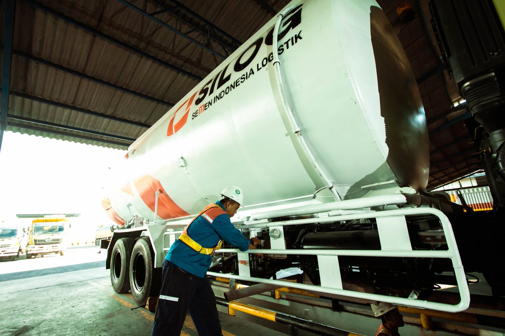
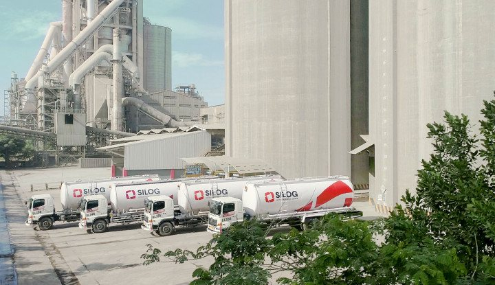
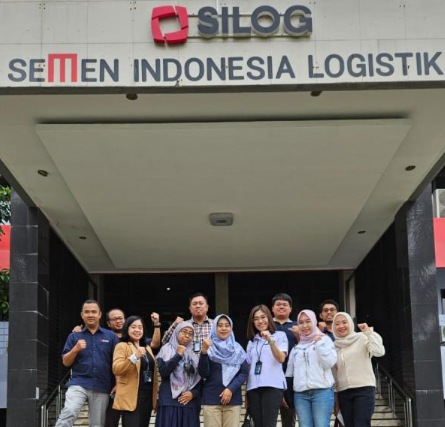
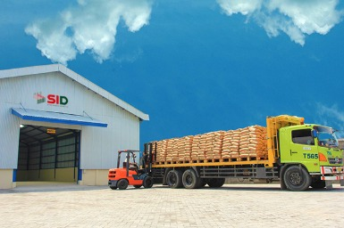
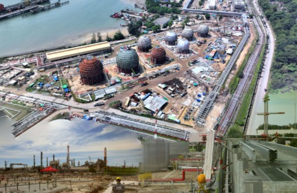

Portofolio
Pengerjaan elektrikal dan instrumen di RDMP Balikpapan
SILOG mendapat kepercayaan untuk mengerjakan beberapa paket proyek elektrikal dan instrumen di RDMP Balikpapan.
Diskusikan ProyekLogistik yang andal adalah penggerak utama distribusi barang dan roda perekonomian. SILOG hadir menghubungkan pabrik, gudang, pelabuhan, hingga pelanggan di seluruh Indonesia.


PT Semen Indonesia Logistik (SILOG) adalah anak usaha Semen Indonesia Group yang menyediakan jasa logistik terintegrasi: transportasi darat dan laut, pergudangan, serta konstruksi dan manufaktur. Layanan kami melayani pasar SIG maupun non-SIG.

Sebagian proyek konstruksi dan elektrikal-instrumen yang kami kerjakan.
SILOG mendapat kepercayaan untuk mengerjakan beberapa paket proyek elektrikal dan instrumen di RDMP Balikpapan.
Diskusikan ProyekDiskusikan dengan tim SILOG.
Solusi rantai pasok yang menyeluruh untuk setiap pelanggan.
Transportasi dan distribusi barang industri lewat darat, laut, dan multimoda, termasuk angkutan semen dan non-semen.
Pengelolaan armada truk untuk produk semen dan non-semen, seperti angkutan terpal, barang fabrikasi, dan limbah B3.
Permintaan angkutan diterima dan dikonfirmasi.
Armada dan jadwal dialokasikan.
Muatan dimuat dan diperiksa.
Pengiriman dipantau hingga tujuan.
Bongkar muat dan dokumen serah terima diselesaikan.
Pengangkutan komoditas melalui jalur laut serta pengelolaan operasional kepelabuhanan.
Rencana pengapalan disusun.
Muatan masuk area pelabuhan dan diverifikasi.
Pemuatan ke kapal.
Pelayaran menuju pelabuhan tujuan.
Pembongkaran dan penyerahan muatan.
Integrasi beberapa moda angkutan dalam satu alur pengiriman dari asal hingga tujuan.
Rute dan kombinasi moda ditentukan.
Pengambilan barang dari lokasi asal.
Perpindahan antarmoda terkoordinasi.
Pengiriman akhir ke lokasi pelanggan.
Penyimpanan, konsolidasi, dan pusat distribusi dengan pengelolaan pihak ketiga (3PL) dan keempat (4PL), serta pengelolaan pallet.

Gudang dan pusat distribusi untuk menyimpan serta mengonsolidasikan barang sebelum dikirim.
Barang diterima dan dicatat.
Barang disimpan sesuai area dan karakteristiknya.
Konsolidasi sesuai pesanan.
Barang disiapkan dan dikirim ke tujuan.
Penyediaan dan perbaikan pallet untuk mendukung bongkar muat dan distribusi produk.
Pallet kembali dari lapangan dan dikumpulkan.
Kondisi pallet diperiksa.
Pallet rusak diperbaiki di bengkel.
Pallet layak pakai didistribusikan kembali.
Layanan konstruksi industri dan manufaktur oleh unit DEPCON, dengan pengalaman lebih dari 30 tahun.

Pembuatan silo, pemasangan bag filter, dan fabrikasi struktur mekanikal untuk fasilitas industri.
Kebutuhan dan spesifikasi dibahas.
Desain dan rencana kerja disusun.
Fabrikasi di bengkel.
Pemasangan di lokasi.
Pengujian dan serah terima.
Pemeliharaan, perbaikan, dan overhaul (MRO) untuk menjaga fasilitas industri tetap andal.
Inspeksi kondisi peralatan.
Rencana pemeliharaan atau perbaikan.
Pelaksanaan pekerjaan.
Uji fungsi dan laporan hasil.
Untuk menjaga rantai pasok industri nasional tetap bergerak, SILOG perlu didukung dengan kemampuan individu yang terbaik.
Jl. Veteran No.129, Kb. Dalem, Sidomulyo, Kec. Kebomas,
Kabupaten Gresik, Jawa Timur 61122